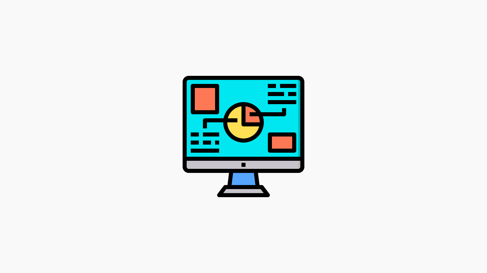

Örnek Fotoğraflar/Stok Fotoğraflar

Bilişim ve teknoloji dersleri, günümüz eğitim sistemlerinde önemli bir yer tutmaktadır. Bu dersler, öğrencilerin dijital dünyayı anlamaları ve bu dünyada etkili bir şekilde yer alabilmeleri için gerekli bilgi ve becerileri kazandırır. Teknolojinin hızla geliştiği bir dönemde, bilişim ve teknoloji dersleri öğrencileri geleceğe hazırlamak adına kritik bir rol oynamaktadır.Bilişim, bilgiyi toplama, işleme, depolama ve iletme süreçlerini kapsayan bir alandır. Teknoloji ise insan hayatını kolaylaştırmak ve daha verimli hale getirmek amacıyla bilimsel bilgilerin pratik uygulamalarını içerir. Bilişim ve teknoloji dersleri, bu iki kavramın birleşiminden ortaya çıkarak, öğrencileri dijital dünya hakkında bilgilendirir ve teknolojiyi etkili bir şekilde kullanmalarını sağlar.
Bilişim ve teknoloji derslerinin temel amacı, öğrencilere dijital okuryazarlık kazandırmaktır. Dijital okuryazarlık, bir kişinin teknolojiyi ne kadar etkin kullanabildiği, dijital araçlarla veri toplama, analiz etme ve iletişim kurma becerilerini kapsar. Bu dersin önemli bir başka amacı da öğrencilerin teknolojiye olan ilgilerini artırmak, yeni teknolojiler hakkında bilgi edinmelerini sağlamak ve onları teknoloji üreticisi olmaya yönlendirmektir.
Donanım ve yazılım arasındaki farkları, bilgisayarın çalışma prensiplerini öğrenirler.
İnternetin nasıl çalıştığı, web sitelerinin yapısı ve arama motorlarının işlevleri hakkında bilgi edinirler.
Genellikle temel seviyede programlama dilleri öğretilir. Python, JavaScript gibi dillerle basit yazılımlar geliştirebilme becerisi kazandırılır.